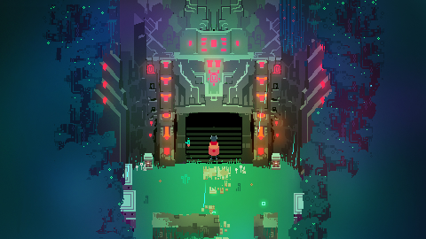
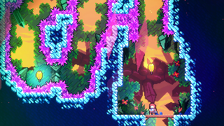
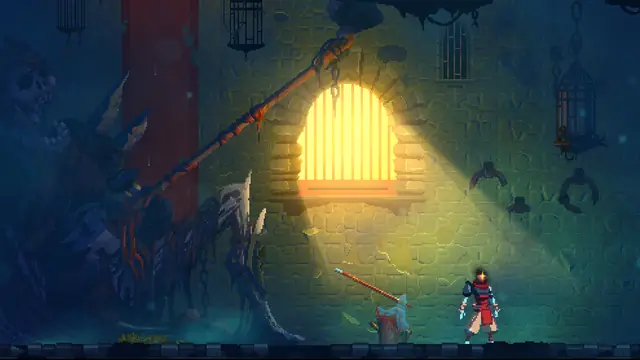
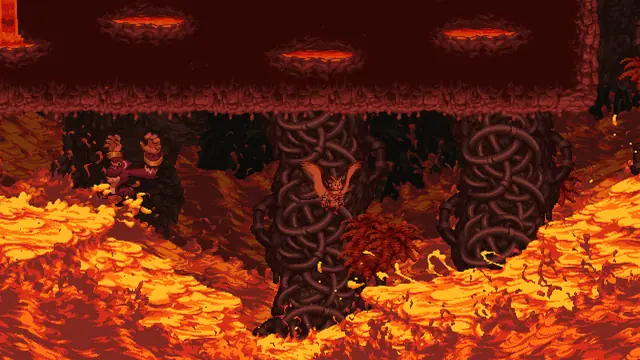
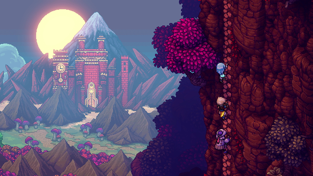
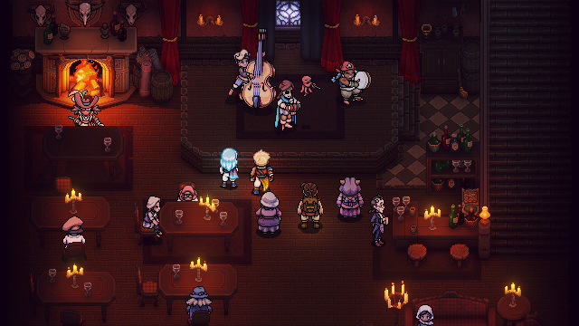
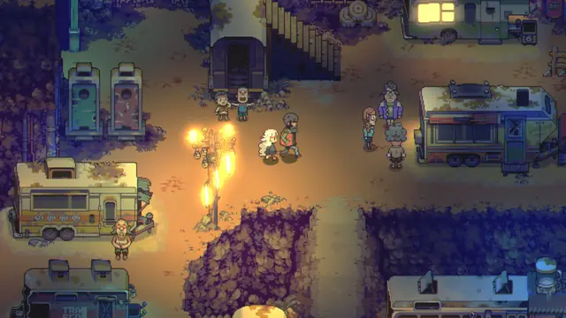
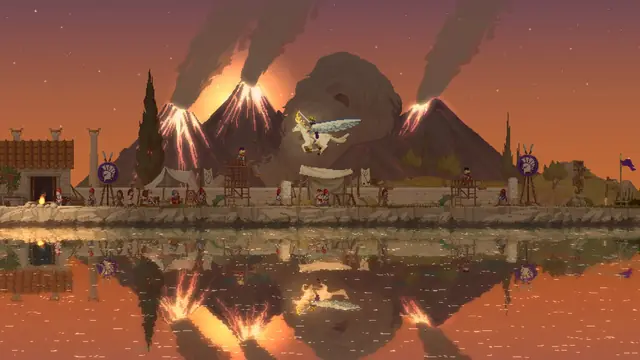
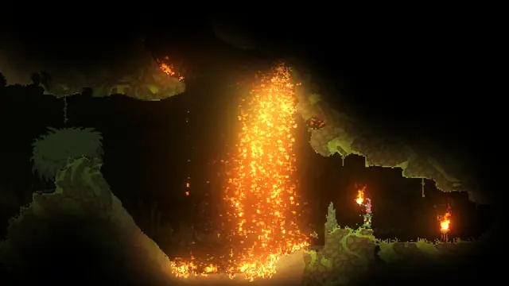
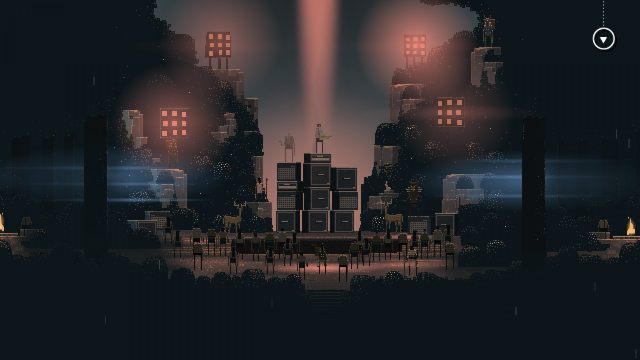

The feel
Modern pixel art keeps the square pixel and drops the old hardware. Alx Preston, who made Hyper Light Drifter, puts the difference this way: retro "consciously and actively decides to stick to rigid standards to the past", while his team took "that limited canvas" and did "things that were simply not possible before".1 Many of these games look as if they could have come out on the Super NES or Sega Genesis, yet their graphics and play are more complex than those machines could ever handle.2
It still works the way pixel art always has. Pedro Medeiros, Celeste's artist, compares it to Impressionism: Madeline's face is "just four pixels", and the face each player sees in them is not the one he sees.2 What has changed is who sets the limits. Medeiros and the pixel artist Christina-Antoinette Neofotistou use a nearly limitless set of tools on art defined by limits they choose themselves, and Celeste's makers add tricks the 1980s did not have: realistic lighting, layered scrolling backgrounds and special effects.2 Preston embraces colour, "bright, saturated, neon, muted, whatever works", to express a mood.3
- glowing
- fluid
- saturated
- hand-placed
- dusk-lit
- widescreen
Where it comes from
Pixel art was once a key ingredient of game hardware, and when millions of colours, higher resolutions and 3D models arrived there was less need to trick the eye.4 In the 1990s Sony actively held back 2D pixel art games on its new PlayStation, and the indie boom has since helped restore its reputation: small teams can now make games that would once have needed AAA budgets.2 D-Pad Studio worked on Owlboy from 2007.5 Alx Preston began Hyper Light Drifter in 2012 as high-resolution illustration, found that too much for one person and moved to pixel art, and its Kickstarter in 2013 raised over 20 times its target.6 By 2020 D-Pad described a wave of games breaking the old restrictions with higher resolutions, unrestricted palettes and new technology merged with old techniques.4
Core elements
Small widescreen canvas
The canvas stays small, but its size is the artist's choice. Hyper Light Drifter runs at 480 by 270, which Preston says creates some good rules while everything else stayed flexible,3 and Celeste's screen is 320 by 180.7 Neofotistou sees this discipline, limits set by the artist and not by the technology, as what separates modern pixel art from what came before.2 The art is drawn for sharp fixed-pixel screens such as OLEDs, where the older work was drawn for CRT televisions.2
Unrestricted palette
No hardware palette decides the colours. D-Pad Studio counts unrestricted palettes among the ways new pixel art breaks the old restrictions.4 Hyper Light Drifter makes heavy use of colour and of scale,6 and Preston explores palettes "to express a mood, feeling, theme".3
Real-time lighting
Light moves through the scene and falls on the sprites. Where many older games swapped palettes to fake a change of light, objects in Sea of Stars cast shadows as the light moves around them, and spells light up their surroundings.8 Celeste's lights collide with the terrain instead of shining through walls,7 and Eastward's lighting carries its atmosphere, weather and time of day.9
Normal maps on sprites
Sprites carry information about their shape, so the light can model them. Dead Cells exports every frame of animation with a normal map and renders its volume with a basic toon shader.10 Eastward rebuilds its assets in 3D and hand-paints a bump map for each one so it takes the light correctly.9
Fog, glow and particle layers
Effects sit over the pixel art in layers. Eastward has intricate fog layers and sunbeams breaking through the landscape at dawn and dusk.9 Sea of Stars uses particle-based dynamic lighting, and its two heroes glow when they walk into the dark.8 Dead Cells leans on effects for movement, impact and strength, and slips blend modes into its exported frames.10
High frame counts
Animation is no longer rationed. Hyper Light Drifter pushed the number of enemies and frames of animation as far as suited the game,3 with many enemies on screen at once because memory limits no longer stood in the way.6 Dead Cells generates its interpolation frames automatically for smooth animation.10
How to do it
Pick a canvas that scales to HD
Choose a 16:9 canvas that multiplies by whole numbers into common screens. 640 by 360 is a good baseline: it scales to 1280 by 720, 1920 by 1080, 2560 by 1440 and 3840 by 2160 with no black bars.11 Hyper Light Drifter uses 480 by 2703 and Celeste 320 by 180.7 Scale by whole numbers only: on a 1366 by 768 window, a 640 by 360 game shows at 1280 by 720 with bars round it, because at 2.133 times the pixels come out uneven.11
Size sprites from the smallest detail
Before you draw, ask what the smallest necessary detail is, usually the eyes on a character, and how many pixels it needs in your style. Go no bigger, because spare space tempts you to fill it with noise and pillow shading, and when in doubt, go smaller.12 Madeline's face in Celeste is four pixels.2 Dead Cells' hero is only 50 pixels tall in the game.10
Build hue-shifted ramps
Make each colour ramp run from dark to light with a steady shift in hue, for example 9 swatches with 20 degrees of hue shift between each. Lower the saturation as colours get very bright, then copy the ramp round the colour wheel, 45 degrees apart for 8 ramps.13 Let the light set the direction: under a light warmer than the object, the object looks cooler as it turns into shadow, and a strong coloured rim light can turn grey cloth red-magenta.14 Keep the accent colour to about 10 to 20% of the picture.14
Light the scene
Start from a dark ambient colour for everything no light reaches, then add point lights for torches, fire and projectiles and a directional light for the sun or moon. Give each sprite a shadow-casting shape that matches its outline, and use hard, unfiltered shadows, which suit the blocky look.15 When the game draws at the window's full resolution, lights are worked out per screen pixel, not per sprite pixel, so nearest-neighbour filtering will not make them blocky. To match the pixels, round each light's sample position down to the grid: floor(position / pixel size) × pixel size, with a pixel size such as 4.15
Paint normal maps for sprites
A normal map records which way each pixel faces, so light changes across a sprite's form. Paint a height map by hand and convert it, or generate one from the sprite, then raise the light's height, because a light close to the surface barely shows on normal-mapped sprites.15 Eastward splits each asset into parts, such as a roof and a wall, before hand-painting its bump maps,9 and Dead Cells exports a normal map with every frame of animation.10
Make chosen sprites glow
Glow appears where a pixel's light passes the HDR threshold: at 1.0, only light brighter than white glows, while any bloom above 0 sends the whole screen to the glow. With the 2D image rendered in high dynamic range, push only the sprites that should glow, such as coins and bullets, above normal brightness, and keep the interface out of the glow.16 For short flashes such as bullets or explosions, additive sprites are much cheaper than real lights.15
Animate key poses first
Time the key poses with as few frames as possible. Then add extra frames just before or after each key, never between two keys, so attacks stay pose to pose as in Dead Cells, and let effects carry the movement and impact.10 For small moves, sub-pixel animation uses in-between colours to suggest movement between two pixels.4
Cheat sheet
- Scaling
- Whole-number multiples only11
- Colour ramps
- 9 swatches, up to 20° hue shift per step13
- Accent colour
- About 10 to 20% of the picture14
- Lights
- Dark ambient base, point and sun lights, hard shadows15
- Glow
- Threshold 1.0, chosen sprites pushed above it16
- Animation
- Key poses first, extra frames only before or after them10
Do
- Plan the lighting from the first day. Sea of Stars began with dynamic lighting, and every asset had to answer to its technical needs.17
- Let lights hit the walls. Celeste's lights do, because simple spotlights that ignore the terrain did not suit a game about climbing through it.7
- Design characters by shape and colour so players can tell who they are at a glance, as Simon Andersen did for Owlboy.5
- Put the extra frames into acting. Hyper Light Drifter added frames of animation as far as suited the game,3 and Owlboy's characters show who they are through how they look and move.5
- Keep the interface out of the glow.16
Avoid
- Fractional scaling. At 2.133 times, line widths vary and a checkerboard no longer looks even.11
- Sprites bigger than the detail needs. The spare space tempts you to fill it with noise, pillow shading and sloppy pixels.12
- Straight ramps that change only brightness and saturation. They lack interest and are hard to harmonise with ramps of other hues.13
- Smooth light over blocky sprites by accident. When the game draws at the window's full resolution, nearest-neighbour filtering does not make the light blocky, so snap it to the pixel grid.15
- Leaning on nostalgia. Medeiros feels some games use it "almost as a crutch", and it is not a feeling his studio's games set out to convey.2
Tools and tutorials
- Pedro Medeiros: Pixel Art Tutorials
Short illustrated lessons by Celeste's artist, each a single 512 by 512 pixel image.
- Pixel Parmesan
Essays by the pixel artist lux on colour, resolution, anti-aliasing and dithering.
- Slynyrd Pixelblog
Raymond Schlitter's step-by-step lessons, from colour ramps to parallax and animation.
- Aseprite
Eastward's artist Hong Moran drew the game's assets in it.9
- Laigter
A free, open-source tool that generates normal and specular maps for sprites.15
- Godot: 2D lights and shadows
Ambient colour, point and directional lights, occluders, normal maps and a pixel-snapping shader, with pictures of each.
Palette
Dusk indigo, rock lavender, sunset coral and sunset yellow come from Celeste's windy sunset, Drifter teal and glow magenta from Hyper Light Drifter, moon cream from Dead Cells' moonlit bridge and ember orange from Noita's falling fire.
Feel the vibe
In motion
Listen
For the teal and magenta scenes above, while you light a dark room.
YouTubeFor a long session on a run cycle or a hard climb.
YouTubeFor fast sprites, hit sparks and glowing weapon trails.
YouTubeFor bright skies and big hand-placed islands.
YouTubeFor quiet, dim rooms where one lamp does all the work.
YouTube
More references










Games
- Hyper Light Drifter
Study its colour: bright, saturated, neon and muted palettes chosen for mood, at 480 by 270.3
- Owlboy
Study how its characters act through pose and movement, and how shape and colour make each one readable.5
- Celeste
A 320 by 180 screen with lights that hit the walls.7
- Dead Cells
3D models rendered small and without anti-aliasing, each frame lit through its own normal map.10
- Eastward
Study its bump-mapped buildings, fog layers and sunbeams at dawn and dusk.9
- Sea of Stars
The heroes switch between day and night at will, and objects cast shadows as the light moves round them.8
Film, art and more
- Paul Robertson
Preston named him among Hyper Light Drifter's influences: "anything that Paul Robertson does is amazing".6
- Hayao Miyazaki
Preston names Miyazaki first among the older anime he grew up with that shaped Hyper Light Drifter's look.6
- castpixel
Pixel illustration and animation by Christina-Antoinette Neofotistou, who calls the medium "geometric problemsolving".2
- Impression, Sunrise
A visual parallel. Medeiros sees a lot in common between pixel art and Impressionism, which also leaves the viewer to fill in the blanks.2
Sources
- 1Hyper Light Drifter Interview: Everything You Need To Know About Heart Machine's 2D Action RPG
- 2The Pixel Art Revolution Will Be Televised
- 3Road to the IGF: Heart Machine's Hyper Light Drifter
- 4Read about the future of pixel art according to the creators of Owlboy!
- 5Using graphics to express character and theme in Owlboy
- 6The ultra-modern stylings of Hyper Light Drifter
- 7Remaking Celeste's Lighting
- 8Astrolabe Feature: Sea of Stars is the game Chrono Trigger fans have been waiting for
- 9Eastward's creators share insights on making pixel art adventures
- 10Art Design Deep Dive: Using a 3D pipeline for 2D animation in Dead Cells
- 11Multiple resolutions
- 12Choosing the Right Resolution for your Pixel Art
- 13Pixelblog 1: Color Palettes
- 14Color Theory for Pixel Artists: It's All Relative
- 152D lights and shadows
- 16Environment and post-processing
- 17How Sea of Stars' world was enriched by Prince of Persia, Batman and maple syrup